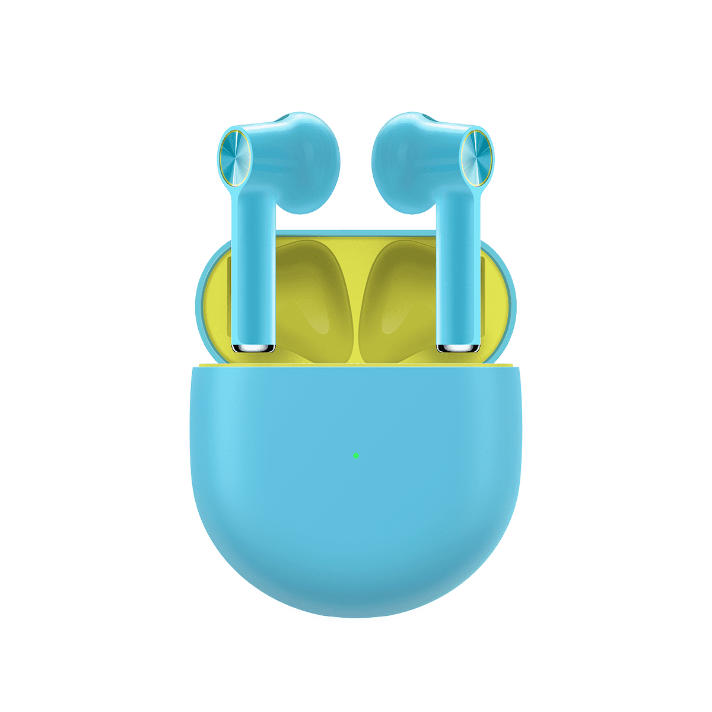

Design and Build
In terms of design, the earbuds follow half in-ear design. The design resembles that of Apple Airpods; the ear canal design and the extruding legs seems highly inspired from the Apple Airpods. The head of the earbud, however, is similar to that of OnePlus Bullet Z following the half in-ear design.
The company has mentioned that the half-in ear design being more comfortable for higher demography of people, OnePlus Buds is expected to be snug for wider range of users.
Talking about the case, it seems quite compact.
Sound Quality
The new OnePlus buds feature a 13.4mm dynamic driver. Thus, we can expect a decent sound quality with good amount of bass since the 13.44mm driver provides enough travel for the diaphragm.
The buds sport a Dolby Atmos and Dirac Sound support as well allowing users to enjoy 3D stereo audio and ample sound tuning through the Oneplus’s Oxygen OS.
About the codecs, the OnePlus Bud supports only SBC and AAC codecs. They do not support high-quality codecs like APT-X HD and LDAC, limiting itself to receive the transmitted frequency.
Features
The earphones come with the virtual buttons for controls. The CD-design at the back of the buds are actually touch-pads for audio control. The earbuds support customizable double taps and long press functions to give more liberty to the users.
The stock control has next track, previous track, activate assistant and play/pause for double tap function. Meanwhile, the long press function enables users to switch between multiple devices and receive phone calls. These controls can be tweaked per preferences buy the user from Oxygen OS.
With the multiple-device support, you can connect your earbuds with compound devices and seamlessly switch between them. This removes the hassle of disconnecting your earbuds from existing device and pair again with the new one.
The OnePlus buds have other features like in-ear detection to play/pause media when you remove the earphones from your ear. The OnePlus companion app has “find device” feature which lets you navigate your earbuds if you dropped them somewhere while still connected.
Battery Backup
Battery Backup is the area where OnePlus Buds shines in particular. The earbuds can last up to 7 hours of music playback and 4 hours of phone call in a single charge.
The charging case has 420mAh of battery, providing enough juice for the earphones to extend their playback up to 30 hours on a single charge.
In terms of charging, OnePlus says the earbuds can yield up to 10 hours of music playback (case + earbuds) in 10 minutes of charging. Looking at it seems like you don’t really have to worry about the battery while listening to the buds.
The LED in the charging case indicates your charging and battery status.
Price and Availabilty
OnePlus Buds is set to available for order by August 4th alongside the OnePlus Nord. The price for the buds in Rs. 4,990 in India and $79 in Europe and USA.